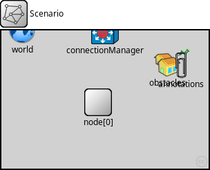
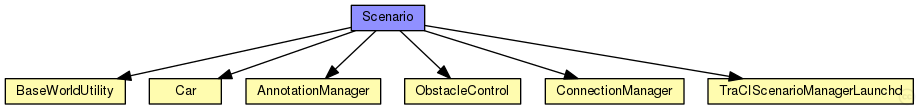
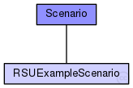

This documentation is released under the Creative Commons license
This documentation is released under the Creative Commons license(no description)
The following diagram shows usage relationships between types. Unresolved types are missing from the diagram.
The following diagram shows inheritance relationships for this type. Unresolved types are missing from the diagram.
| Name | Type | Description |
|---|---|---|
| RSUExampleScenario | network | (no description) |
| Name | Type | Default value | Description |
|---|---|---|---|
| playgroundSizeX | double |
x size of the area the nodes are in (in meters) |
|
| playgroundSizeY | double |
y size of the area the nodes are in (in meters) |
|
| playgroundSizeZ | double |
z size of the area the nodes are in (in meters) |
| Name | Value | Description |
|---|---|---|
| isNetwork | ||
| display | bgb=$playgroundSizeX,$playgroundSizeY |
| Name | Type | Default value | Description |
|---|---|---|---|
| obstacles.obstacles | xml | xml(" |
list of obstacle types and obstacles to load |
| obstacles.gridCellSize | int | 250 |
size of square grid tiles for obstacle store |
| annotations.draw | bool | false |
draw annotations? |
| annotations.annotations | xml | xml(" |
annotations to add at startup |
| connectionManager.sendDirect | bool |
send directly to the node or create separate gates for every connection |
|
| connectionManager.maxInterfDist | double |
maximum interference distance [m] |
|
| connectionManager.drawMaxIntfDist | bool | false |
should the maximum interference distance be displayed for each node? |
| world.useTorus | bool | false |
use the playground as torus? |
| world.use2D | bool | false |
use a 2-dimensional world? |
| manager.connectAt | double | 0s |
when to connect to TraCI server (must be the initial timestep of the server) |
| manager.firstStepAt | double | -1s |
when to start synchronizing with the TraCI server (-1: immediately after connecting) |
| manager.updateInterval | double | 1s |
time interval of hosts' position updates |
| manager.moduleType | string | "org.car2x.veins.nodes.Car" |
module type to be used in the simulation for each managed vehicle |
| manager.moduleName | string | "node" |
module name to be used in the simulation for each managed vehicle |
| manager.moduleDisplayString | string | "*='i=veins/node/car;is=vs'" |
module displayString to be used in the simulation for each managed vehicle display strings key-value pairs needs to be protected with single quotes, as they use an = sign as the type mappings. For example *.manager.moduleDisplayString = "'i=block/process'" *.manager.moduleDisplayString = "a='i=block/process' b='i=misc/sun'" moduleDisplayString can also be left empty: *.manager.moduleDisplayString = "" |
| manager.trafficLightModuleType | string | "" |
module type to be used in the simulation for each managed traffic light |
| manager.trafficLightModuleName | string | "tls" |
module name to be used in the simulation for each managed traffic light |
| manager.trafficLightFilter | string | "" |
filter string to select which tls shall be subscribed, list sumo IDs separated by spaces |
| manager.trafficLightModuleDisplayString | string | "i=misc/node2;is=vs;r=0,,#707070,1" |
module displayString to be used in the simulation for each managed traffic light |
| manager.host | string | "localhost" |
server hostname |
| manager.port | int | 9999 |
server port (-1: automatic) |
| manager.seed | int | -1 |
seed value to set in launch configuration, if missing (-1: current run number) |
| manager.autoShutdown | bool | true |
Shutdown module as soon as no more vehicles are in the simulation |
| manager.margin | int | 25 |
margin to add to all received vehicle positions |
| manager.roiRoads | string | "" |
which roads (e.g. "hwy1 hwy2") are considered to consitute the region of interest, if not empty |
| manager.roiRects | string | "" |
which rectangles (e.g. "0,0-10,10 20,20-30,30) are considered to consitute the region of interest, if not empty. Note that these rectangles have to use TraCI (SUMO) coordinates and not OMNeT++. They can be easily read from sumo-gui. |
| manager.penetrationRate | double | 1 |
the probability of a vehicle being equipped with Car2X technology |
| manager.ignoreGuiCommands | bool | false |
whether to ignore all TraCI commands that only make sense when the server has a graphical user interface |
| manager.launchConfig | xml |
launch configuration to send to sumo-launchd.py |
|
| node.appl.headerLength | int |
length of the application message header (in bits) |
|
| node.veinsmobility.x | double |
x coordinate of the nodes' position (-1 = random) |
|
| node.veinsmobility.y | double |
y coordinate of the nodes' position (-1 = random) |
|
| node.veinsmobility.z | double |
z coordinate of the nodes' position (-1 = random) |
This documentation is released under the Creative Commons license